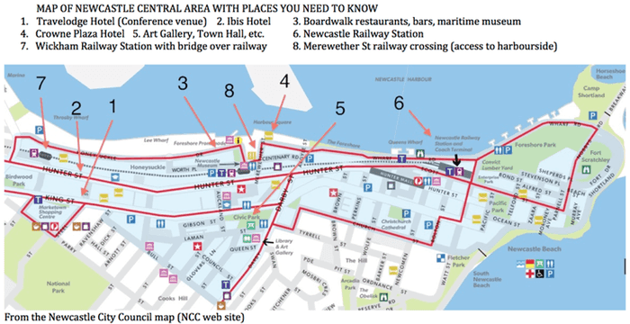

| Abstract Submission Form | Workshop Details | Conference Registration |
This year's conference is being organised by Miles Bore and Don Munro from the University of Newcastle. Details of abstract submission, conference location, registration and accommodation are shown below.
For some 14 years this enjoyable and stimulating annual conference has been made up of people with a passion for personality and individual differences psychology: researchers, practitioners and (most importantly) students. Whether an old ACPID hand or a newby you are of course most warmly welcome and we look forward to seeing you at this year's conference!
Newcastle Travelodge, corner of Steel and King Street Newcastle, NSW.
We are delighted to advise that Emeritus Professor Gerry Fogarty and Professor Lazar Stankov will be our keynote speakers for the conference.
Three presentation formats will be run:
Please download and complete the Abstract Submission Form and email it to Miles Bore by 27 October 2014.
Online registration will open in early September
A half day workshop on Cattell-Horn-Carroll theory based methods of cross-battery cognitive assessment will be held at the Travelodge on Thursday 27 November, 1.30pm to 5.00pm including afternoon tea. Cost: Delegate $45.00 and Student $35.00. Numbers are limited. Details available here.
Our conference dinner will be held at Silo Restaurant located on Newcastle Harbour. Price includes two courses, great ambiance, views and of course great company. Cost: $55.00. To assist with bookings, if you think you might attend the dinner could you please email Miles Bore as soon as possible.
The Travelodge Hotel (where the conference will be held) is a five-minute walk from Wickham Train Station, which is just a short ride from Newcastle city centre. Timetables for the Newcastle Trains are available online. Alternatively, Newcastle Beach is about a 40-minute stroll from the Travelodge Hotel via the Foreshore.
In addition to accommodation at the Travelodge Hotel there are a range of options available in the area. A selection of hotels and apartments near the conference centre are listed below:
| Name | Price | Distance from conference |
|---|---|---|
| Travelodge Hotel | From $130/night | - |
| CBD Hotel Newcastle | From $80/night | 0.6km |
| Crown Plaza | From $185/night | 1.1km |
| Crown on Darby | From $175/night | 1.2km |
| Chifley Apartments | From $160/night | 1.2km |
| Ibis Newcastle, Hunter St | From $115/night | 200 metres |
| Honeysuckle Executive Apartments | From $175/night | 1.5km |
| Novotel Newcastle Beach | From $180/night | 2.1km |
| Quality Hotel NOAH'S On the Beach | From $170/night | 2.5km |
| The Executive Inn | From $170/night | 5km |
| The Gateway Inn | From $170/night | 5.5km |
| Mercure Charlestown | From $130/night | 7.2km |
| Ibis Budget Newcastle | From $85/night | 10.2km |

Click map for a high resolution version
Newcastle is Australia's second oldest city and has served as a harsh penal outpost, 'steel city' and industrial centre, and (now) the largest coal-exporting port in the world. It reaches out to the sea, creating Australia's only city centre bounded by pristine beaches and an active working harbour. From our intriguing 200 year story has arisen a dynamic city of contrasts. Discover a port city in transition and delight in a mixture of the raw and refined. Working wharves are becoming places of play; the city hums with a vibrant arts culture and an emerging food scene is evident. Some things need never change - the surf is still world class, the pace remains relaxed and the friendly locals are proud of their city. See Visit Newcastle.
From visitnewcastle.com.au:
Road — Newcastle is 2 hours drive north of Sydney and is accessible from the following major Highways: M1, Pacific Highway, New England Highway and the Golden Highway.
Air - Newcastle Airport is located 30 minutes from Newcastle city centre and is the fastest growing regional airport in Australia with direct flights several times a day from/to Melbourne, Brisbane, Sydney, Canberra, Gold Coast and Ballina. For a current flight timetable visit the website. Port Stephens Coaches service Newcastle Airport from Newcastle Station 11 times a day during the week, and 5 times a day on weekends. For further information on timetables and services, contact Port Stephens Coaches on 02 4982 2940 or their website. For direct transfers, the Newcastle Airport Information Services desk is your one stop shop to book your airport transfer, including taxi (about $40 to/from town) shuttle and hire car and limousine services. Please call 4928 9822 or email direct.
Rail — Newcastle is part of the New South Wales City Rail network. There are services daily from/to Sydney at least once an hour (takes 2.5 hours). The journey, especially around the Hawkesbury River, is enjoyable in itself. For timetables and fares visit the Sydney Trains website. CountryLink trains and coach network connect Newcastle via Broadmeadow station to Melbourne, Brisbane, Armidale and other NSW country centres. Click here for timetables, fares and online bookings.
From visitnewcastle.com.au:
Fare Free Bus Zone — State Transit buses (that's the blue and white ones) are FREE within the inner city zone along Hunter Street from the Catholic Cathedral to Newcastle Railway Station, and as far south as Bull Street on Darby Street. The fare free zone operates between 7:30am and 6:00pm seven days a week. This is a fantastic way to get around the inner city for free without the hassles of driving and parking. Normal fares apply for travel outside of this zone. Ask the bus driver if you are unsure of the route or destination. Timetables for the Newcastle Buses are available online.
If you are traveling to Newcastle by car there is parking available the Travelodge Hotel.
There are two "eat streets" in Newcastle:
In addition, a newer restaurant and bar strip is the Boardwalk, on the harbour quite near the conference hotel — but you have to go east along Hunter St to the Merewether St railway crossing to get there, OR cross the bridge at Wickham Railway station (350 metres west of the hotel). Either way, it's about a 15-20 minutes walk, We will meet after the first day for drinks at the large modern Honeysuckle Hotel overlooking the harbour, and the conference dinner will be at one of the Boardwalk restaurants nearby.
Recommended (from many):
Night clubs — there are several within walking distance of the Travelodge
Walk the Foreshore — an excellent walk or jog for your morning or evening exercise is to go down to the harbour foreshore (via either the Merewether St railway crossing or the bridge at Wickham Station) and head east towards Nobby's (the lighthouse station). There is a wide walkway all the way, passing numerous historic and modern points of interest. From the Foreshore Park there is an excellent view of the Anglican Cathedral on the hill and the city with its mix of old and new, especially in the morning sunshine. Allow about an hour there and back at a steady walking pace. Or linger and watch the ships in the harbour (some of the world's largest bulk carriers come and go). Or continue past Nobby's and out to the end of the breakwater (add half an hour).
Return by Newcastle Beach — continue past Nobby's Beach and round to the Ocean Baths and Newcastle Beach, then through the Hunter St Mall (lots of cafés on the way) and back along Hunter St or King St. Add half an hour to the Foreshore walk. OR continue along Newcastle Beach and up to King Edward Park and The Hill (interesting relics of WWII coastal defences, and The Bogey Hole, dug from the rocks by convicts for the pleasure of an early Commandant), then back down the steep hill to Hunter St Mall and King or Hunter streets. Add a further half hour.
Bring your surfboard — there is no shortage of surf.
Wander the streets — Urban Walkabout has compiled a number of walks around Newcastle, which can be found here.
Visit Newcastle Museum and the Maritime Centre (both in the Honeysuckle area near the Boardwalk restaurants), and Fort Scratchley (near Nobby's). The latter was built in the late 1800s to defend against Russia! On the top are the naval guns that fired on a Japanese submarine that shelled Newcastle in June 1942.
Visit the Northern Regional Art Gallery, opposite the City Hall and about a 10 minute walk from the Travelodge Hotel. This is one of the best regional galleries in Australia, in a city that is known for its artistic activities and talent. Special exhibitions at the time of the conference include the Kilgour Prize for figurative and portrait painting, and a new exhibition by Patricia Paccinini (Australian sculptor) opening on Saturday 29th. There are several other public and private galleries in the area, including Watt Space — the University of Newcastle's student art gallery hosts exhibitions that support emerging student artists and is open to the public from 11-5pm Wednesday to Sunday. It's in Auckland St, in the University Law and Commerce building just before you get to the City Hall.
Visit the local shops — head to either Darby Street or the Hunter Mall to explore local boutiques and meet the homegrown designers. The city has tried to renew the central area in recent months by allowing art and craft startups to occupy vacant shops cheaply. For everyday things Marketown is a fairly comprehensive shopping centre directly opposite the Travelodge, with both Coles and Woolworths and their partners, cafés, chemists, etc., (even a McDonalds!).
If you have a car (or hire one) there are several day trips from Newcastle — up the Hunter Valley to the vineyards, cellar door tastings, and restaurants, to Port Stevens resorts and dolphin watching (no whales in November, regrettably), to Barrington Tops National Park, etc.
Bushwalking in Glenrock — only ten minutes drive from the Newcastle city centre, Glenrock State Conservation Area is a beautiful coastal rainforest. A number of scenic trails can be found online.
Ride the Fernleigh track — A historic rail that is now a cycleway linking Newcastle and Lake Macquarie. The 15km track passes through beautiful bushland, wetland forests, and coastal heaths. Bikes can be hired from $20 for 1 hour or $40 for 1 day through Boomerang Bike Hire.
Farmers and Makers Market — held Newcastle Showground most Sundays from 8-1pm, the Farmers and Makers Market brings together local farmers and producers. Among the gourmet food products you will find fresh pastas, cheese, pastries, boutique wines and much more.
Visit Newcastle — comprehensive guide to Newcastle
Hunter Hunter — local favourites and hidden gems